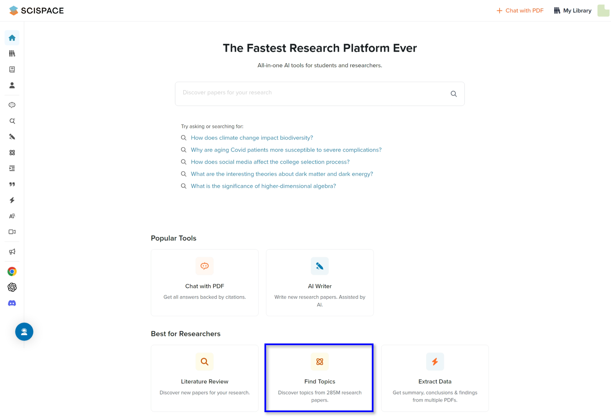
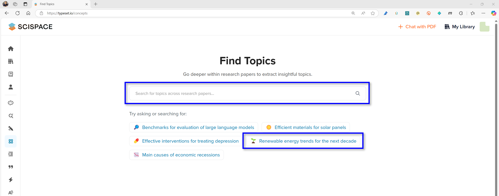
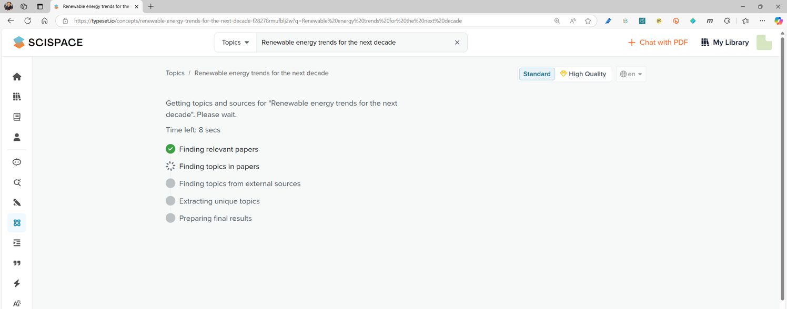
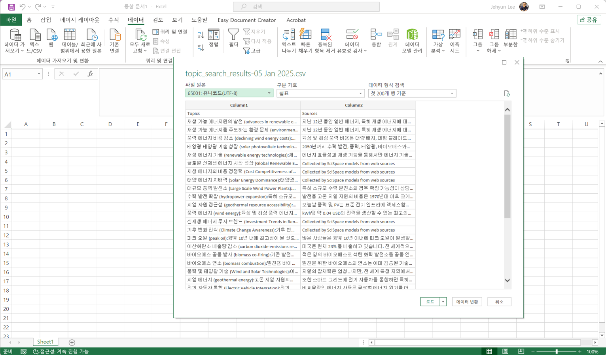
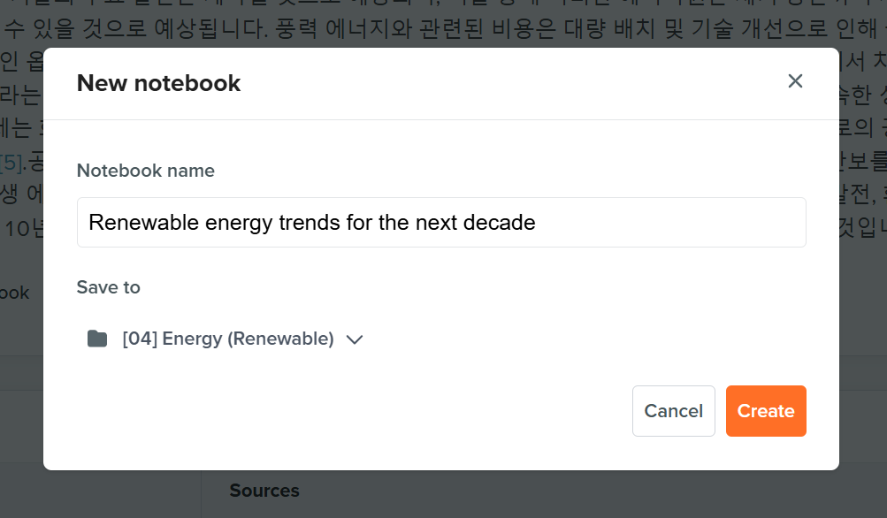
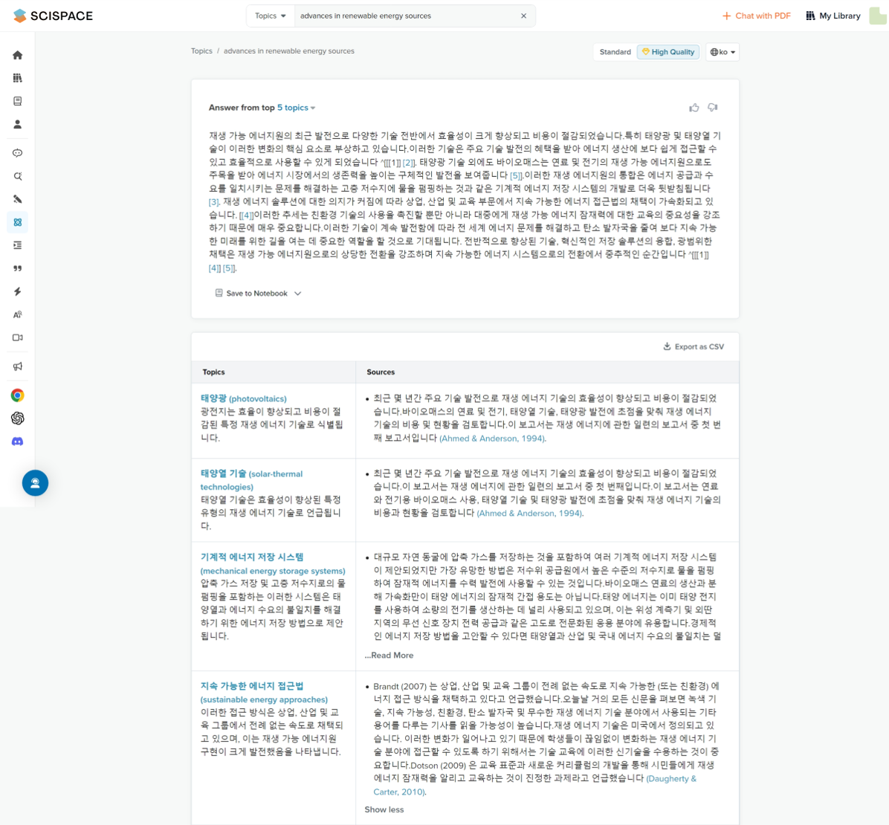

- SciSpace 두 번째 글입니다. Find Topics라는 기능이 있습니다.
- 하나의 주제에 대한 문헌을 찾고 글을 모으기를 반복할 수 있는 기능입니다.
- 잘 사용하면 문헌 조사를 매우 빠르게 할 수 있으나, 레퍼런스의 상태를 잘 확인해야 합니다.
3. Find Topics
** 3.1. Literature Review vs Find Topics
지난 글에서
Literature Review기능을 리뷰했습니다.간단히 정리하자면, 특정 주제에 대해 문헌들을 검색하고 내용들을 정리하는 기능입니다.
정리된 레퍼런스들은 하단에 표 형태로 정리되어 문헌간 비교를 하기 좋게 되어 있습니다.
거듭 강조하지만 이 표에 나오는 레퍼런스 정리는 많이 빈약합니다.
Chat with PDF모드로 가서 제대로 뒤져보실 필요가 있습니다.Find Topics기능은Literature Review기능과 비슷하면서 다릅니다.Literature Review가 하나의 주제에 대한 여러 논문을 검색한다면,Find Topics는 입력한 주제를 중심으로 여러 세부 주제를 찾습니다(Finding Topics).이 때 레퍼런스는 세부 주제 하나에 몇 개만을 찾아서 가져오기 때문에 주제 하나에 대한 깊이는 얕은 편입니다.
일종의 레퍼런스를 사용해 강화하는 brain storming으로 볼 수 있습니다.

3.2. Find Topics
Find Topics로 들어가면 아래와 같은 화면이 나옵니다.- 관심이 있는 주제를 직접 입력해도 되는데, 마침 본업에 속하는 주제가 있어 클릭을 해 봅니다.

- 약 1~2초간 빠르게 다섯 단계를 진행합니다.
- 관련 논문 탐색
- 논문별 주제 탐색
- 외부 소스로부터 주제 탐색
- 독특한(unique) 주제 추출
- 최종 결과 준비

- 잠시 후 등장한 화면은 다음과 같습니다.
Literature Review와 마찬가지로 다섯 편(10편으로 조정 가능)의 논문에서 정리된 단락이 있습니다.- 그리고 하단에는 개별 논문 대신 개별 주제들과 이에 해당하는 논문들이 있습니다.
- Sources에 Generated by SciSpace models라고 쓰인 것들이 있습니다.
- 레퍼런스 없이 AI가 추론만 한 것으로 보입니다.

- 상단에 결과물의 품질을 결정하는 Standard/High Quality버튼이 있습니다.
- 유료 사용자라면 High Quality를 눌러 더 좋은 결과를 얻을 수 있습니다.
- 무료 버전만 쓸 때는 무료 버전도 괜찮다고 느끼지만,
- 유료 모드로 사용해보면 무료 버전이 너무 부족하다는 것을 느끼게 됩니다.
- 출력 언어도 지정할 수 있습니다.
- 영어로 출력하는 것이 기본이지만 한국어를 선택하면 한국어 버전의 답을 볼 수 있습니다.
- 단, 이 때 영어 버전의 답변을 번역하는 것이 아니라 완전히 새롭게 답을 생성해 제출합니다.
- 영어로 받은 답이 마음에 든다면 번역기를 사용하는 것을 권장합니다.

- 찾은 주제와 이에 대한 소스들이 나란히 놓여 있습니다만, 단점이 곧장 드러납니다.
- “향후 10년의 경향”을 요청했음에도 불구하고 1993년, 2011년 논문을 인용합니다.
- 레퍼런스를 제대로 체크하지 않으면 그럴싸할 뿐 맞지 않는 이야기를 하게 됩니다.
- AI는 완벽하지 않습니다. 도움을 주면 감사하게 쓰고, 미흡하면 기각해야 합니다.
- 그리고 이를 거를 수 있는 눈은 사용자가 개발하지 않으면 누구도 대신 해 주지 않습니다.
- 클릭할 수 있는 곳들이 곳곳에 있습니다. 하나씩 살펴봅니다.
- Export as CSV: Topics/Sources 표를 CSV 형식으로 내보냅니다.
- 다운로드된 파일을 더블클릭해서 엑셀로 열면 한글이 깨져 있기도 합니다.
- 인코딩 문제입니다.
엑셀 프로그램 실행>새 통합 문서>데이터 탭>텍스트/CSV 열기>utf-8 인코딩으로 여세요.

- Save to Notebook: 주제를 노트북에 저장합니다.
- Jupyter Notebook처럼 코딩을 할 수 있는 플랫폼이나 형식이 아니라, 메모장 같은 겁니다.
- SciSpace가 정리한 결과를 다시 꺼내볼 수 있도록 저장해 둡니다.
My Library에서 폴더를 만들었다면, 폴더를 지정할 수 있습니다.My Library는 다음 글에서 자세히 설명하겠습니다.

- Topic 이름: 이를 바탕으로 또 다른 Topic들을 도출합니다.
- 가지의 가지를 친다고도 볼 수 있습니다.
- 아쉽게도 더 깊이 파고들어간다는 느낌은 들지 않습니다.
- 오픈소스 레퍼런스의 한계 때문인지, 얕은 바닥에서 빙빙 돈다는 느낌이 듭니다.

3.3. 맺음말
- 이번 글은 여기까지입니다.
new가 붙은 새로운 기능이어서 그런지, 만족감보다 아쉬움이 더 큽니다.- Topics > Topics > … 로 가는 기능이 정상적으로 작동한다면 심층 분석이 들어가야 할 것입니다.
- 그러나 그러기에는 레퍼런스의 장벽이 생각보다 높게 느껴집니다.
- 유료 논문들에 접근을 하지 못하는 바람에 근본적인 한계가 있다고도 느껴집니다.
- 그러나 Vector DB를 사용하는 RAG 방식으로 인한 본질적 제약이라는 생각입니다.
- RAG(Retrieval Augmented Generation) 방식의 특성상 수집한 DB의 chunk, 즉 토막글에서 관련 글을 찾을 것입니다.
- 이 때 년도나 저널명 같은 정보는 부차적으로 처리될 것이고, 선별이 어려워집니다.
- 하지만 이제까지 문제가 있으면 기를 쓰고 해결해온 것이 인류입니다.
- 더 나은 솔루션이 생각보다 훨씬 빨리 등장하리라 생각하고, 기대합니다.